کنترل خودکار خیز تیرها
مراحل کنترل خیز در نرم افزار سیویل تولز به شرح زیر است:
- انتخاب تیرهای مورد نظر
ابتدا کاربر تیرهایی که قصد کنترل خیز آنها را دارد، در مدل ایتبز انتخاب میکند. در این مرحله کاربر میتواند همه مدل را انتخاب کند، گرچند این کار توصیه نمیشود. چون زمان تحلیل را افزایش میدهد. در خصوص کنسولها نکته ای وجود دارد که میتوانید در این قسمت ملاحظه کنید.
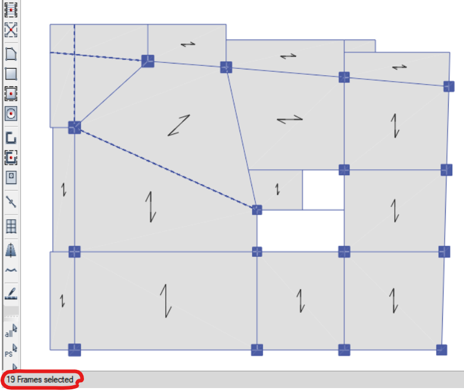
- اجرای دستور کنترل خیز تیرها
دستور کنترل خیز را از منوی Control> Beam Deflection و یا از طریق آیکون برنامه اجرا کنید.
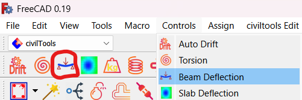
- انجام تنظیمات
بعد از اجرای دستور کنترل خیز، پنجره زیر نمایش داده میشود که بیشتر موارد این پنجره به طور خودکار پر میشود. معمولا بخش ۲ نیاز به تنظیم دارد.
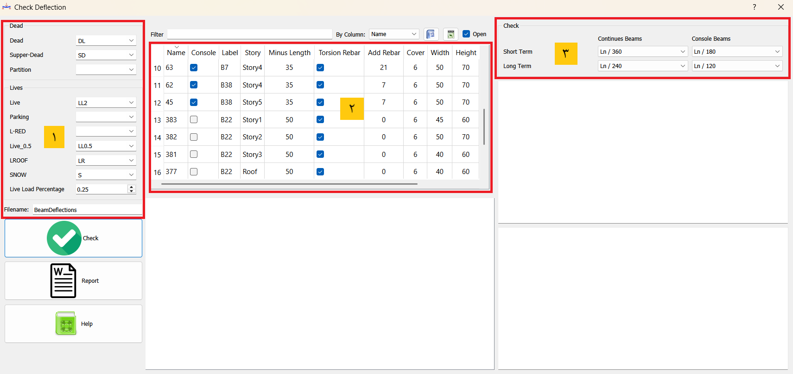
۱- در این قسمت نوع بارها از تنظیمات فایل ایتبز خوانده و جایگذاری میشود. همچنین مقدار درصد بار زنده از تنظیمات نرم افزار سیویل تولز خوانده میشود. اسم فایل کنترل خیز نیز در قسمت FileName وارد میشود.
۲- در این قسمت کاربر برای تمامی تیرها تنظیمات لازم را انجام میدهد.
- Console: اگر تیر مورد نظر کنسول است این گزینه تیک زده شود.
- Minus Length: با توجه به اینکه برای بدست آوردن خیز مجاز نیاز به طول خالص تیر می باشد، لذا در این قسمت کاربر عددی به سانتی متر وارد میکند که از طول کل تیر کم میشود.
- Torsion Rebar: مقدار مساحت میلگرد پیچشی تیر در محاسبه درصد میلگرد لحاظ میگردد.
- Add Rebar: با توجه به اینکه محاسبات میلگرد ایتبز با نقشه ها متفاوت می باشد، کاربر میتواند میلگرد اضافی مورد نیاز را در این قسمت وارد کند.
۳- تنظیم معیارهای کنترل خیز
در این قسمت کاربر معیارهایی که برای کنترل خیز کوتاه مدت و دراز مدت برای تیرهای کنسول و یکسره مد نظر دارد را وارد میکند. این تنظیمات را میتوان برای یکبار و همه مدلها در قسمت تنظیمات نرم افزار سیویل تولز انجام داد، برای اینکار از منوی Edit> Preferences نرم افزار سیویل تولز را انتخاب کنید.
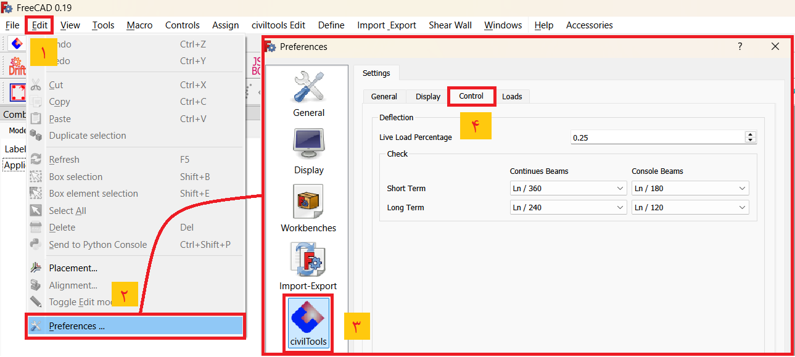
- چک کردن خیز
با زدن کلید Check فرایند کنترل خیز تیرها شروع میشود. این فرایند نسبتا زمانبر است. نکته ای که وجود دارد، اگر در فایل اصلی و بعد از طراحی سازه، نرم افزار متوقف شد، پنجره فعلی را بسته و مجددا دستور را اجرا کنید. تمام تنظیمات ذخیره شده و فقط کافیست که دوباره کلید Check را بزنید.
- نمایش نتایج
پس از پایان فرایند کنترل خیز، نتایج به صورت رنگی نمایش داده میشود:
قسمت ۴- خلاصه کنترل خیز تیر انتخاب شده را نشان میدهد. deflection1 خیز کوتاه مدت و deflection2 خیز دراز مدت می باشد.
قسمت ۵- تیر انتخاب شده را در پلان طبقه نمایش میدهد.
قسمت ۶- روند کنترل خیز تیر و جزيیات رانشان میدهد.
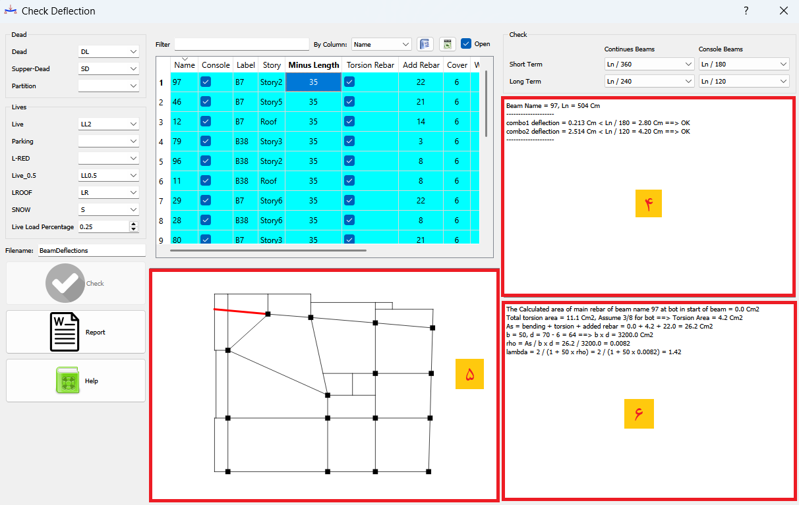
- رنگ آبی: کنترل خیز تیر جواب داده است.
- رنگ زرد: خیز بلند مدت جواب نداده است.
- رنگ قرمز: خیز کوتاه مدت جواب نداده است.
- گزارش کنترل خیز
در نهایت با زدن کلید Report یک گزارش از کنترل خیز تمامی تیرها به فرمت word ایجاد میشود.
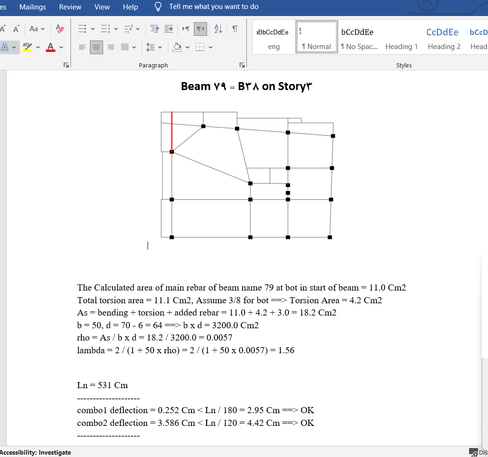
به منظور کنترل خیز تیرها در نرم افزار ایتبز مراحل زیر را انجام میدهیم:
- تحلیل و طراحی سازه بتنی اصلی
- بدست آوردن نسبت میلگرد تیرها و ضریب \(\lambda_\Delta\)
- ذخیره فایل اصلی با نام دیگر
- تغییر سختی اعضا
- ایجاد لودکیس و ترکیب بارهای غیرخطی
- انجام تحلیل ترکخوردگی و مشاهده نتایج
برای کنترل خیز تیرها اولین کاری که باید انجام بدهیم بدست آوردن میلگرد های تیر هست که البته توسط نرمافزار ایتبس محاسبه می شود. نکته مهم در این قسمت این است که آرماتور های پیچشی نیز باید محاسبه و منظور شوند. محاسبه آرماتور های پیچشی باید در فایلی که ضریب خمشی سقف ها( درصورت مدل سازی به صورت shell) برابر 0.25 است انجام گیرد. چون در این صورت خمش ناشی از سقف باعث افزایش میلگرد های پیچشی تیرها می شوند. ضریب ترک خوردگی تیر و ستون ها نیز به ترتیب 0.35 و 0.7 می باشند.
پس از طراحی سازه باید مقدار درصد میلگرد تیرها برداشت شود(برای تیرهای پیوسته یا ساده در وسط دهانه و بالای مقطع و در تیرهای طره در بر تکیه گاه و در پایین مقطع) . تا با استفاده از درصد میلگرد فشاری تیرها (\(\rho\)) , \(\lambda_\Delta\) محاسبه شود.
پس از بدست آوردن ضریب \(\lambda_\Delta\) باید تحلیل ترک خوردگی انجام شود تا ضرایب ترک خوردگی واقعی برای اعضا محاسبه شوند. برای این کار باید ابتدا تمامی ضرایب ترک خوردگی تیرها 1 قرار داده شوند. پس از اعمال ضریب ترک خوردگی 1 برای تیرها باید تحلیل ترک خوردگی را برای تیرها فعال کنیم. برای این کار ابتدا تمامی تیرها را انتخاب کرده و از طریق منوی Assign>Frame>Floor cracking تحلیل ترک خوردگی را برای آن ها در نظر میگیریم.
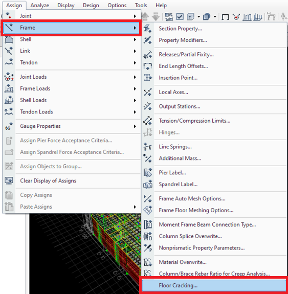
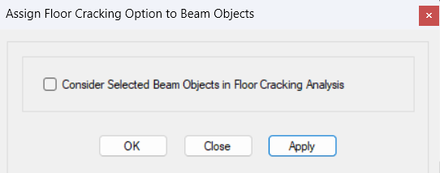
بعداز انجام این مراحل باید لودکیس های غیرخطی مطابق با تصویر زیر برای انجام تحلیل ترک خوردگی تعریف شوند:
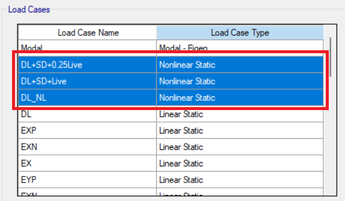
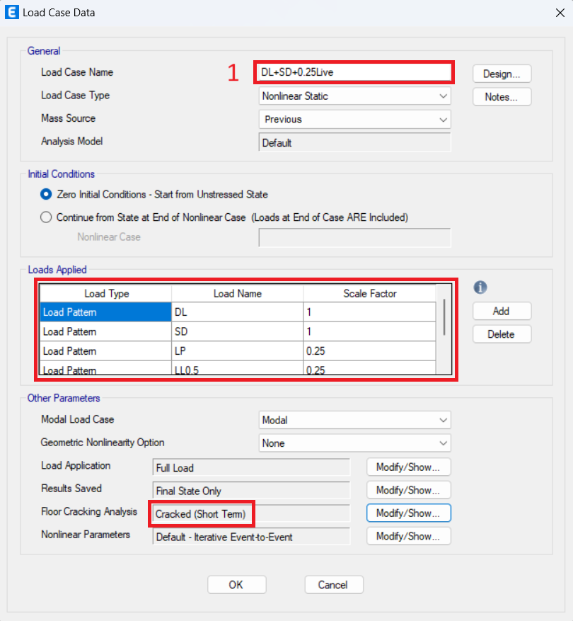
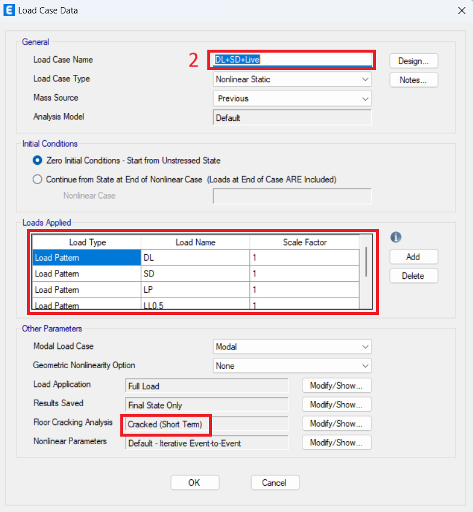
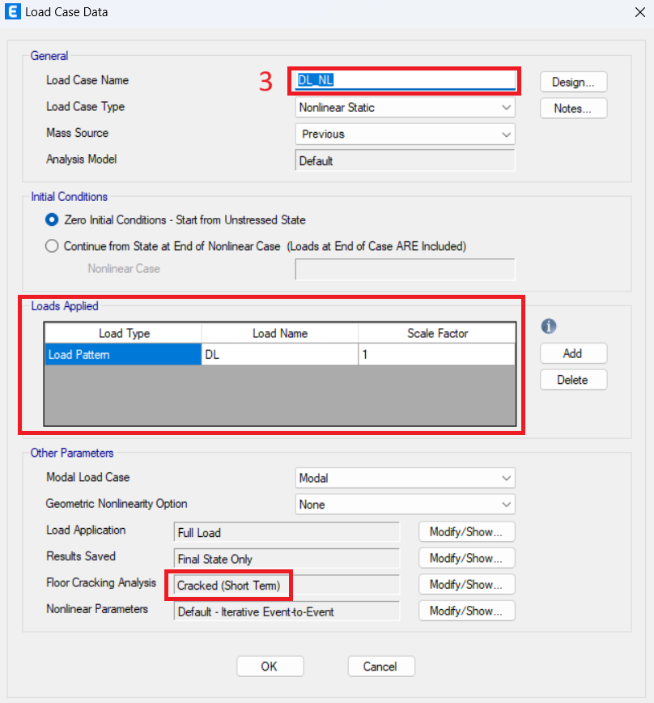
درصدی از بارهای زنده حالت ماندگار دارند و همانند بارهای مرده باعث ایجاد خزش میشوند. این درصد در متن آیین نامه مشخص نشده است و بر اساس قضاوت مهندس طراح تعیین میشود.
نکته: لودکیس شماره ۳ برای کنترل خیز تیر تحت بار مرده ۳ ماهه است که هنوز کف سازی ایجاد نشده است. در صورتی که کاربر بار Super Dead تعریف کرده باشد، این لودکیس ساخته شده و در خیز بلند مدت از مقدار خیز بلند مدت می کاهد . درصورتی که کاربر تعریف نکرده باشد، طبیعتا این لودکیس ساخته نمی شود که در جهت اطمینان می باشد.
در مرحله بعد باید ترکیب بارهای کنترل خیز ساخته شوند تا خیز تیر تحت این ترکیب بارها خواند و با مقادیر مجاز مقایسه شوند. ترکیب بارهای کنترل خیز عبارت اند از: 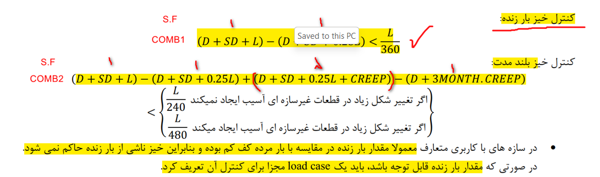
نکته: S.F به معنای ضریب لودکیس ها در ترکیب بار می باشند. . به عنوان مثال ضریب لودکیس ۳ باید برابر \(\lambda_\Delta\) محاسبه شده باشد.
مقادیر مجاز خیز نیز از طریق جدول 9-19-3 برداشت شده است.
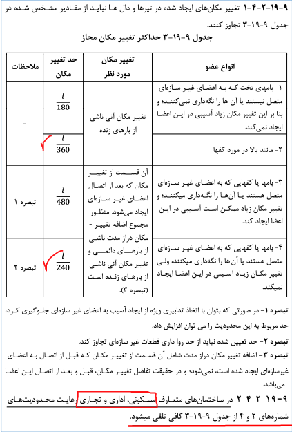
برای مشاهده خیز تیر در ایتبس ، بعد از تحلیل سازه از طریق گزینه مشخص شده در شکل زیر ، تحت هر یک از ترکیب بارهای کنترل خیز ،مقدار خیز نسبی برداشت شده و با مقدار مجاز مقایسه می شود.
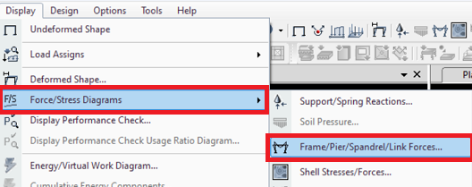
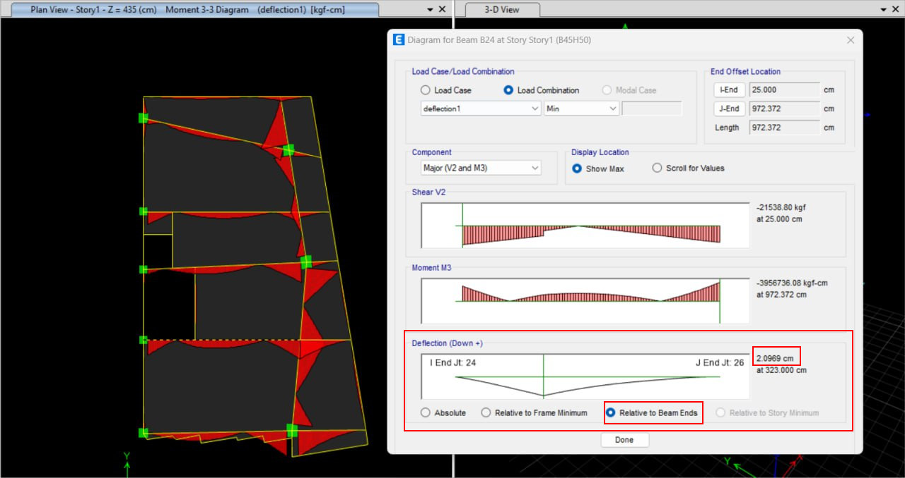
به طور مثال در شکل بالا خیز نسبی تیر (Relative to Beam Ends) تحت ترکیب بار deflection1 مقدار 2.0969 بدست آمده است.
همانطور که می دانید برای محاسبه خیز تیرها روشهای مختلفی وجود دارد که نرمافزار سیویلتولز طبق روشی که در ادامه توضیح خواهیم داد محاسبه خیز تیرهای بتنی را انجام داده و نتایج را به صورت اتوماتیک به کاربر نمایش میدهد.
ابتدا به بررسی بندهای آییننامهای مربوط به کنترل خیز میپردازیم و سپس نحوه محاسبه خیز تیر را شرح میدهیم.
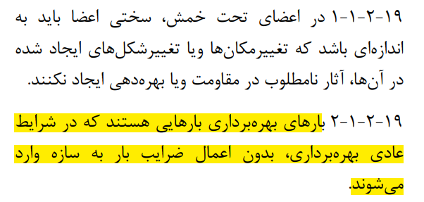 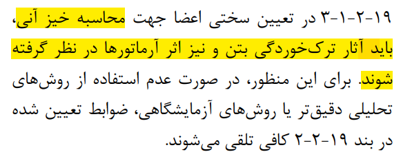 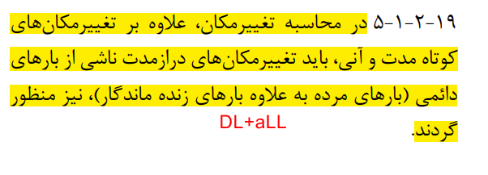 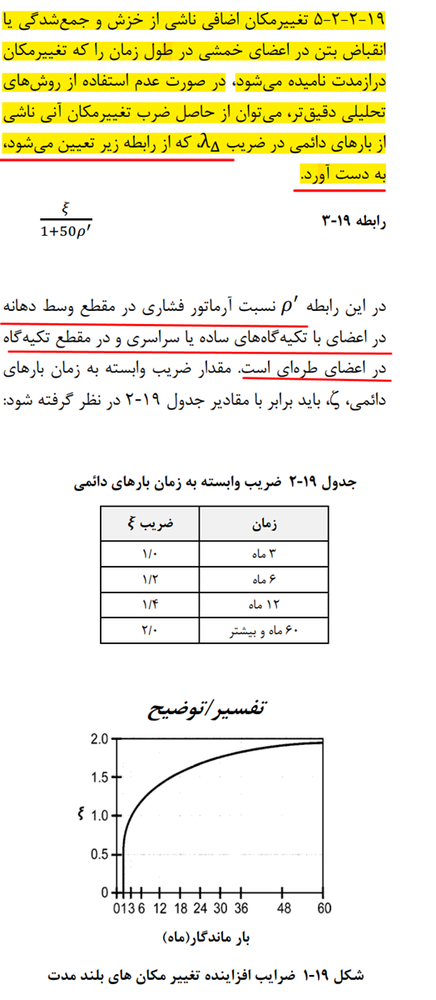
با توجه به بند های بالا، اشاره به چند نکته ضروری است:
۱- برای کنترل خیز ترکیب بارها باید درحالت بهره برداری و بدون ضریب باشند.
۲- در محاسبه خیز باید اثر ترک خوردگی و وجود آرماتور ها در نظر گرفته شود.
۳- علاوه بر تغییرمکانهای کوتاهمدت، باید تغییرمکانهای ناشی از بارهای دائمی که همان بارهای مرده به علاوه درصدی از بارهای زنده است نیز منظور شود.
۴- تغییرمکان طولانیمدت را میتوان با استفاده از حاصلضرب تغییرمکانهای آنی در ضریب \(\lambda_\Delta\) محاسبه کرد.